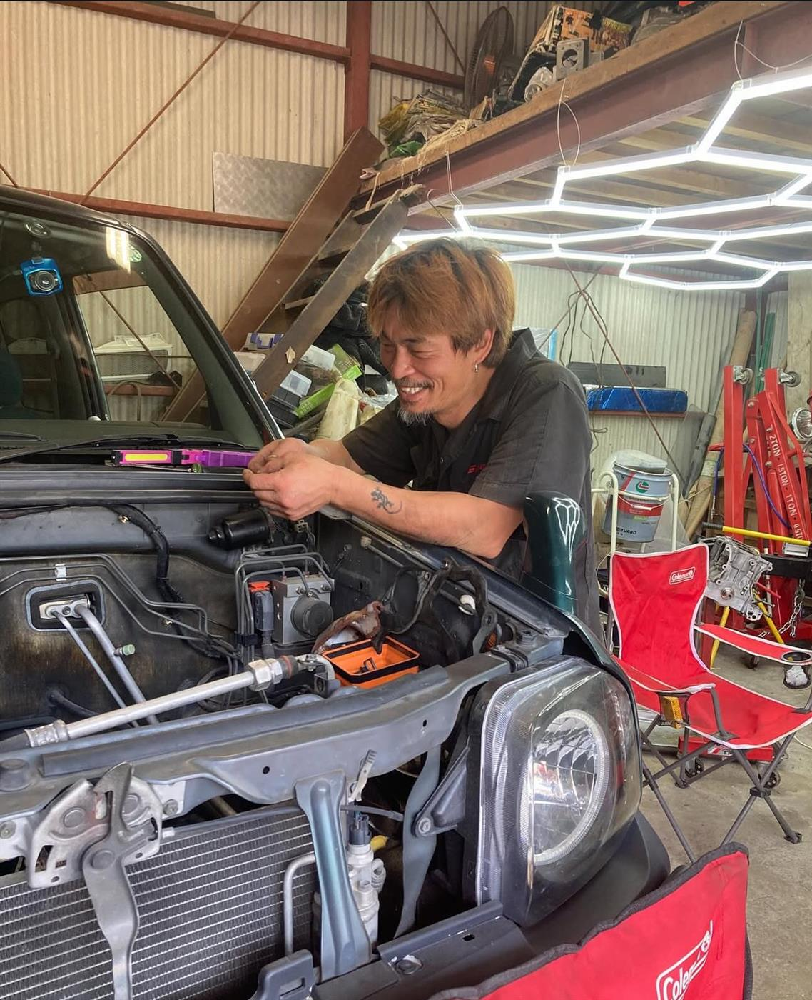

06
MESSAGE
/ 代表からのご挨拶founder.jpg

はじめまして。Nova_83LAB 代表 喜多 康仁です。
クルマが好きで、モノづくりが好きで、気づけば整備士として、開発者として、 デザイナーとして——3つの顔を持ったまま独立したのが、このNova_83LABです。
大きな会社にしかできないことより、ひとりだからこそ小回りが利く 整備・改造・デザインを大切にしています。お客様の「こうしたい」に、 技術と手間を惜しまず向き合うこと。それが、このラボ兼ショップを続けている一番の理由です。
クルマのことも、デザインのことも、まずは気軽にご相談ください。 一台一台、一件一件と、丁寧に向き合っていきます。
— Nova_83LAB 代表 喜多 康仁